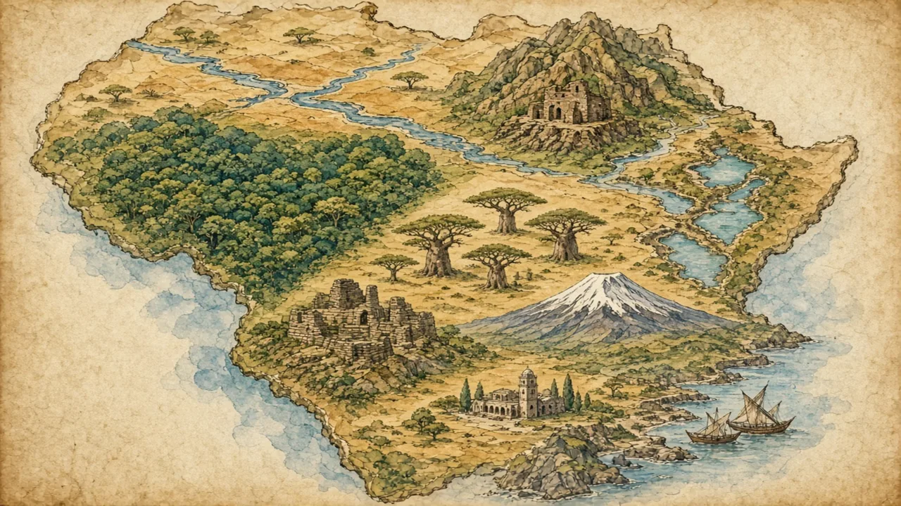

From Senegal to South Africa and Ethiopia to Nigeria: well over a billion people, thousands of languages and a history far older than the colonial era.
Sub-Saharan Africa · Overview · Background
🌍 World map · ← Around the World: Sub-Saharan Africa · 🌱 Easier version (A2) · Is It All Safaris and Wild Animals? →

Each new word is hidden in a sentence. Read it aloud and say what you think the bold word means from the rest of the sentence — then reveal it and see how close you were.
Read each part. After it, there's a quick comprehension check (try the questions from memory first), then one thing to discuss.
Africa is about thirty million square kilometres, roughly three times the size of Europe, and far larger than most flat maps suggest. The Sahara divides North Africa from the rest, and the countries to its south, usually called Sub-Saharan Africa, number nearly fifty. More than a billion people live there, and the median age is under twenty, by far the youngest of any world region. Nigeria is the most populous country, followed by Ethiopia and the Democratic Republic of the Congo. The landscape is anything but uniform: rainforest, savannah, desert, highlands, great lakes and a long coastline, so the climate and the way people live change a great deal from one place to the next.
1. Roughly how big is Africa compared with Europe?
2. What is unusual about the population?
1. About three times the size.
2. It is very young: the median age is under twenty.
Africa's history did not begin with European contact. The kingdom of Aksum in present-day Ethiopia and Eritrea traded across the Red Sea some two thousand years ago. In the fourteenth century, the ruler of the Mali Empire, Mansa Musa, became famous across the Mediterranean for his wealth, and Timbuktu was a centre of learning. The stone city of Great Zimbabwe and the bronze-casting kingdom of Benin were powerful in their own right. After the Berlin Conference of 1884 to 1885, European powers divided much of the continent into colonies with borders that often ignored existing peoples. Ghana became the first sub-Saharan country to win independence, in 1957, and seventeen countries followed in 1960 alone. Ethiopia, apart from a brief occupation by Italy, was never colonised.
1. Who was Mansa Musa?
2. Which country was the first in Sub-Saharan Africa to win independence?
1. The ruler of the Mali Empire, famous for his wealth.
2. Ghana, in 1957.
Today the differences between countries are at least as great as the differences between countries on any other continent. South Africa, Nigeria and Ethiopia are among the largest economies, while others are far smaller and depend on one or two exports. About 2,000 languages are spoken, which is nearly a third of the world's languages, and religions include Christianity, Islam and many local traditions, often practised side by side. Most people still live in rural areas, but the cities are growing faster than anywhere else in the world. The share of people living in extreme poverty has fallen over the past thirty years, although it remains the highest of any region, and serious challenges remain, such as unequal incomes, conflict in some regions and a lack of jobs for the huge number of young people.
1. About how many languages are spoken?
2. Are all countries equally rich or poor?
1. About 2,000, nearly a third of the world's languages.
2. No. They differ greatly.
A stereotype and the reality rarely match. This lesson's grammar gives you the structure to describe the difference.
Complete each sentence about this topic.
1. Africa is larger than it looks on most maps. (far / by far)
2. Nigeria is the most populous country in Africa. (by far / far)
3. Extreme poverty is widespread as it was thirty years ago. (not nearly as / not nearly)
1. far
2. by far
3. not nearly as
1. The you read about the region, the harder it is to generalise. (more / most)
2. Ethiopia is populous than Nigeria. (less / least)
3. Lagos is one of cities on the continent. (the largest / larger)
1. more
2. less
3. the largest
Hold on to this — you'll need it in the Speak tab.
The idea of “Africa” as a single place has been strengthened by flat maps, charity appeals and news that mainly covers crises. It is not wrong that poverty and conflict exist: it is that they are only part of the picture, and are spread unevenly. People in the region usually describe themselves by country, ethnic group, language, city or faith — a Yoruba businesswoman in Lagos, a Kenyan farmer, a Zulu teacher, an Ethiopian software developer. Real connections exist, such as shared history, the African Union and trade, but they link many societies rather than make them one.
This is the heart of the lesson — do all of it out loud. The timer is there to keep you going: fill the time with detail rather than escaping it.
Explain how Sub-Saharan Africa is varied and connected, as if to a friend who pictures one “poor, wild” place. Move through the arc: a huge, varied place → a long history → many Africas today.
Use today's grammar at least three times, and work in at least five key words (continent, savannah, empire, colonial, independence, median age, sub-Saharan, diversity).
“It is not helpful to talk about a whole continent as if it were one place.” Discuss.
Tell a story from your own world — work, family, the news — that connects to this topic. Stuck for an idea? Pick one of these and run with it:
🌍 World map · ← Around the World: Sub-Saharan Africa · 🌱 Easier version (A2) · Is It All Safaris and Wild Animals? →